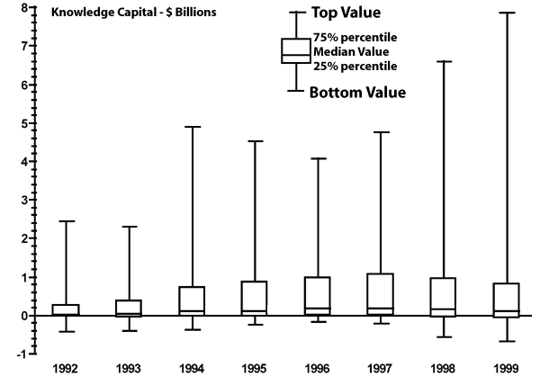
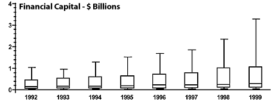
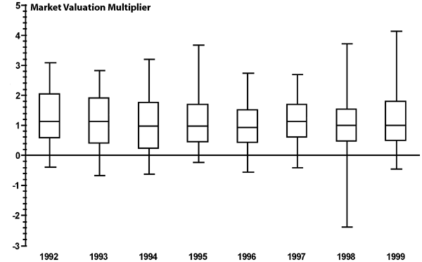

|
August 2000 subscribe e-mail the editor |
Expecting Too Much of KnowledgeThe effects of knowledge capital on profitability aren't simple and are riskier than they may seem.By Paul A. Strassmann
The euphoric visionaries of the information-based "new economy" ought to recognize that behind their dreams of economic gains is a downside. Knowledge-based firms are inherently riskier than organizations for which financial assets remain the basis of success. In the clicks vs. bricks contest, the virtual, disintermediated firm may not necessarily win the competition. To explore the relationship between financial and knowledge assets, I collected data from a random selection of 114 U.S. companies. Next I calculated the knowledge capital (KC) of these firms for the period from 1992 through 1999, with the results shown in the top graph.
|

|  | ||
|
The box plots show that in the past eight years the median value of
knowledge capital rose only slightly; that is, half of the firms have
knowledge capital greater than the median value. But, as reflected in
the thin lines that reveal the range in KC value among all the
companies, the top values rose dramatically, especially since 1998,
and the downside (that is, negative KC) also increased. After 1993 the deviations of the top values from the median values grew enormously. This trend represents a rising gap between the worth of knowledge capital for most firms and for a small number of high performers. If we accept that the tendency of all economic phenomena in the long run is to regress to the median valuations, these disparities are proof of inherent vulnerability. To obtain a full picture of the economic strength of the 114 firms, let's examine the characteristics of their "old economy" assets. The accumulation of financial capital reflected in the middle graph shows a consistent trend that corresponds to the general increase in prosperity over the last decade, as well as the lower costs for owning financial assets. Although the median values keep rising, only a small number of firms own large amounts of financial wealth. When we compare the relative consistency and stability in the distribution of financial capital with the large fluctuations in the distribution of knowledge capital, it becomes obvious where the vulnerabilities to rapid decline lie.
|
|  | ||
|
Perhaps the best way of demonstrating the instability of the new
economy is to compare the "comprehensive valuations" (as discussed in
my initial column, "In Search of Knowledge Capital," Sept. 1999
KMM) of the 114 firms with their market valuations. That is
understood best by tracking the market-to-comprehensive worth
multiplier for the period from 1992 through 1999, as shown in the
bottom graph.
|
|  | ||
|
For practical purposes, my estimates of the fair stock market prices
are about right because the median value of the market valuation to
comprehensive valuation ratio is about 1. The instability for
shareholders comes from the wide variability in market valuation
ratios. For instance, the 1998 valuations range from a negative
multiplier of about 2.5 to a positive multiplier of about 4. A
psychologist would consider such extreme swings in moods as a sign of
manic depression. Now let's look at the management implications in the instability of knowledge capital. KC of course has highly desirable attributes, such as increasing returns on investment and steadily diminishing marginal costs (the incremental cost of an additional unit of output can be close to zero). It can be created through innovation by only a handful of people with an imaginative idea, without the large expense of creating elaborate manufacturing, distribution and marketing operations. There is no limit on its size or scope, in contrast with the physical limitations imposed on factories by supply or geography. In short, the successful deployment of knowledge capital offers unprecedented economic advantages. Unfortunately, this is too good to be the whole story. Sustaining knowledge-based investments is a risky proposition. Factors such as loss or theft, obsolescence, ease of entry by competitors and vulnerability to sudden changes in customer preferences are endemic to it. The gold-rush fantasists who see only unlimited opportunities could benefit from a sober examination of reality.
Paul A. Strassmann originated the trademarked concepts "information productivity," "return-on-management" and "knowledge capital." |